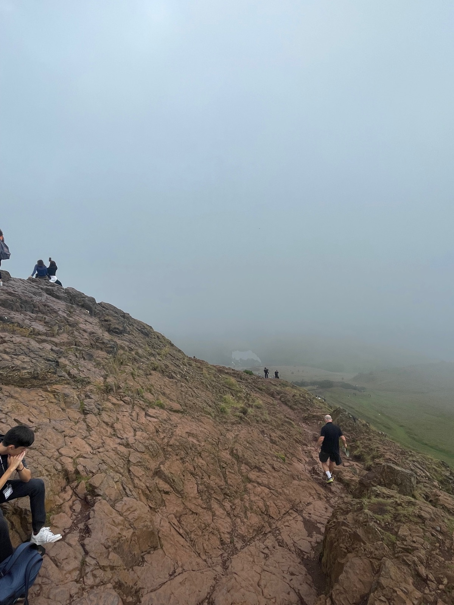
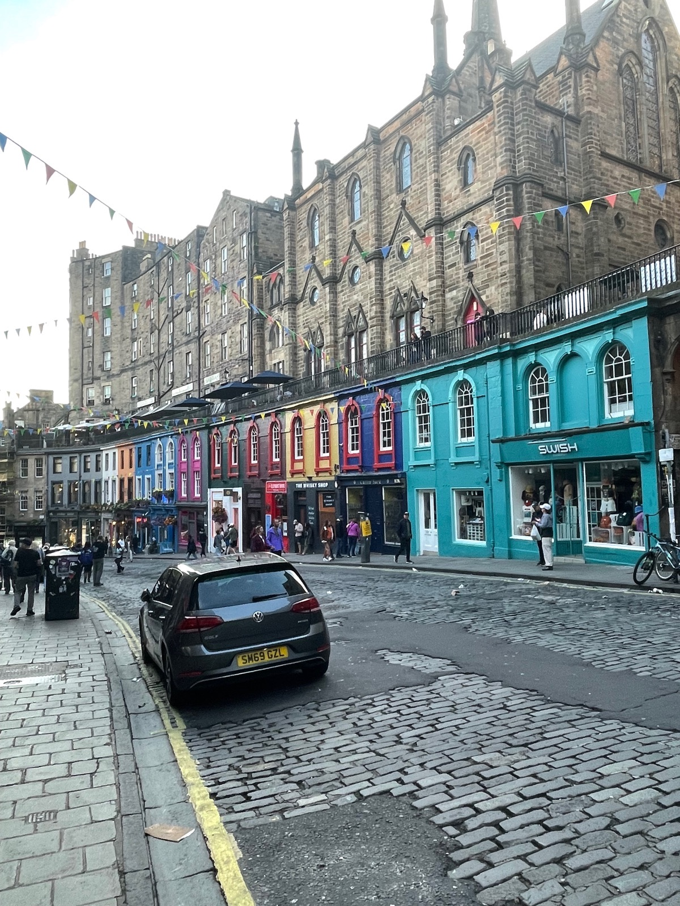

100% GF brewery — all Bellfield beers are Coeliac UK certified. Owner is celiac. Kitchen is small with some cross-contact risk for food, but beer is certified safe.
What to Order
Any Bellfield beer. The Nobles all-day food menu has most dishes GF or adaptable.
Wine bar with small plates. Many items naturally GF.
What to Order
Cheese and charcuterie boards, naturally GF small plates.
Location
Tollcross
GF Café
Looks to be Closed
Café / Gluten-Free
Traveler recommended
GF Score
Safety Notes
Edinburgh's first dedicated GF café near Haymarket. Permanently closed after 8 years.
What to Order
Permanently closed.
Location
Dalry
Salt Café
Looks to be Closed
Café / Breakfast
Traveler recommended
GF Score
Safety Notes
Was celiac-aware. Permanently closed.
What to Order
Permanently closed.
Location
Morningside
Junk
Looks to be Closed
Bar / Restaurant
Traveler recommended
GF Score
Safety Notes
Appears permanently closed. Had inconsistent GF reviews when open.
What to Order
Permanently closed.
Location
Newington
Honeycomb & Co.
Looks to be Closed
Brunch / Tearoom
Traveler recommended
GF Score
Safety Notes
Appears permanently closed. Was a popular brunch spot with GF bread options.
What to Order
Permanently closed.
Location
Bruntsfield
Getting Around
Walking
Edinburgh is compact — Old Town to New Town is 15 minutes on foot. Comfortable shoes are essential though; cobblestones and hills are everywhere.
Best for: Old Town, Royal Mile, New Town
Trams
One line connects the airport to the city centre with 15 stops. Runs every 7–10 minutes. Buy tickets at platform machines or the Transport for Edinburgh app before boarding.
Best for: Airport transfers, Princes Street
Buses
Lothian Buses runs 50+ routes across the city, 24/7. Tap contactless to pay — fares auto-cap at £5/day via TapTapCap, so just keep tapping.
Best for: Leith, Morningside, Bruntsfield
Cycling
The city has a growing network of cycle paths. E-bike hire is available around the centre — great for reaching Leith or the canal paths without the hills.
Best for: Leith waterfront, canal towpath
Local Tip
Use contactless (card or phone) on Lothian Buses — after £5 in a day, every ride after that is free. The Lothian Buses app shows live arrivals and is far more reliable than Google Maps for bus times.
Landmarks & Must-See Spots
11 spots
Edinburgh Castle
Historic
Iconic fortress perched on Castle Rock, dominating the skyline. The views from the battlements stretch across the entire city to the Firth of Forth. Book tickets online to skip the queue.
Old Town · top of Royal Mile
Traveler recommended
Royal Mile
Historic
The spine of the Old Town — a mile of cobblestones connecting Edinburgh Castle to Holyrood Palace. Ducking into the narrow closes (alleyways) off the main drag is where the real charm hides.
Old Town
Traveler recommended
Arthur's Seat
Nature
An ancient volcano right in the middle of the city. The hike to the summit takes about 45 minutes and rewards with 360-degree panoramic views. Go early morning to beat the crowds.
Holyrood Park
Traveler recommended

Calton Hill
Nature
A shorter, easier climb than Arthur's Seat with equally stunning views. The unfinished National Monument at the top gives it a Greek-ruin feel. Perfect for sunset.
East end of Princes Street
Traveler recommended
Water of Leith Walkway
Walk
A peaceful riverside path that winds 12 miles from Balerno to Leith. The stretch through Dean Village to Stockbridge is the most scenic — lush, quiet, and completely removed from the city above.
Dean Village → Stockbridge → Leith
Traveler recommended
Greyfriars Kirkyard
Historic
Atmospheric 16th-century cemetery where J.K. Rowling borrowed names from the tombstones — look for Tom Riddle and McGonagall. Also home to the famous Greyfriars Bobby statue just outside the gate.
Old Town · off Candlemaker Row
Traveler recommended
Cockburn Street
Historic
A curving, cobbled street with colourful shopfronts dropping steeply from the Royal Mile to Waverley. One of Edinburgh's most photographed streets — and home to some great restaurants.
Old Town
Traveler recommended

Royal Yacht Britannia
Historic
The Queen's former floating palace, now permanently docked at Ocean Terminal. The audio tour through the royal quarters and engine room is surprisingly fascinating — allow 2 hours.
Leith · Ocean Terminal
Traveler recommended
Edinburgh Farmers' Market
Market
Every Saturday at the foot of the Castle. Local producers selling Scottish cheeses, baked goods, seasonal veg, and street food. Some stalls have gluten-free options — worth asking.
Castle Terrace · Saturdays
Traveler recommended
The Meadows
Nature
A sprawling green park south of Old Town, popular with runners, picnickers, and students. Beautiful tree-lined paths and a perfect spot to decompress after a day of sightseeing.
South of Old Town · Bruntsfield
Traveler recommended
Gleneagles Townhouse
Viewpoint
A luxury rooftop bar and brasserie on St Andrew Square with panoramic views over the city. Worth booking for cocktails at sunset even if you're not staying at the hotel. Smart casual dress code.
New Town · St Andrew Square
Traveler recommended
Neighborhoods
Old Town
Historic centre
The medieval heart of Edinburgh — steep closes, the Royal Mile, and centuries of layered history. Touristy on the main drag but full of hidden gems down the side alleys. This is where you'll spend most of your first day.
New Town
Elegant & central
Georgian grid of wide streets, grand townhouses, and upscale shopping along George Street and Princes Street. Where most of the nice hotels are — including Charlotte Square. Feels polished but never stuffy.
Dean Village
Hidden & picturesque
A storybook cluster of old mill buildings tucked into a gorge, just minutes from the West End. Walk down from the bridge viewpoint for the best reveal. Connects to the Water of Leith path toward Stockbridge.
Stockbridge
Village-like & indie
A village-within-a-city feel with indie shops, charity shops full of treasures, and a fantastic Sunday farmers' market along the river. Great for a lazy morning wander after walking the Water of Leith.
Leith
Waterfront & food
Edinburgh's port neighborhood, now home to some of the city's best restaurants and the Royal Yacht Britannia. Still gritty in parts but rapidly gentrifying. The waterfront is lovely for an evening walk.
Bruntsfield
Leafy & local
A residential stretch south of the Meadows with independent cafés, brunch spots, and a neighbourhood feel. Where locals actually hang out. LeftField is here.
Morningside
Quiet & charming
A genteel suburb further south with a village high street, great bakeries, and a slower pace. Sugar Daddy's Bakery is the GF standout here. Worth the walk or quick bus ride if you want to escape the tourist areas.
Things to Do
Tours & Experiences
Underground Vaults Ghost Tour
Ticketed
Descend into the Blair Street Vaults beneath the Old Town for a lantern-lit walk through Edinburgh's darkest history. Most tours end with a dram of Scotch in a candlelit cellar. Book the evening slot — it's creepier.
A barrel ride through the whisky-making process right at the top of the Royal Mile, followed by a guided tasting. The Silver tour covers the basics; the Gold and Platinum add rare drams and food pairings.
Full-day coach tours to the Highlands depart from Edinburgh daily. Rabbie's runs small-group trips to Glencoe, Loch Ness, and the Trossachs — pick based on how far north you want to go.
Eleven floors of exhibits from Dolly the Sheep to the Arthur's Seat coffins. The rooftop terrace has one of the best free views in the city. You could spend half a day here easily.
A world-class collection from Titian to Monet in a gorgeous neoclassical building on the Mound. Small enough to see in an hour without feeling rushed. The café downstairs is solid too.
See the Crown Jewels, the Stone of Destiny, and the One O'Clock Gun. Book online to skip the queue — it gets very busy in summer. Allow at least 2 hours to explore properly.
The King's official Scottish residence at the foot of the Royal Mile. The audio tour through Mary Queen of Scots' chambers is fascinating. The gardens are lovely on a clear day.
Comfortable walking shoesEdinburgh is all cobblestones and hills. Cushioned soles are non-negotiable — your feet will thank you by day two.
Shop recommendation
Essential
Celiac travel cardA printed card explaining celiac disease in English. Useful for communicating with kitchen staff — even in an English-speaking country, having it written down helps.
Essential
Portable gluten-free snacksEdinburgh is great for GF dining, but you'll still want backup for long days hiking Arthur's Seat or riding coaches to the Highlands.
Shop recommendation
Essential
Universal power adapter (Type G)UK uses Type G plugs (three big rectangular pins). If you're coming from the US or Europe, you'll need an adapter from day one.
Shop recommendation
Essential
Packable rain jacketIt will rain. Even in July. Scottish weather changes by the hour — a lightweight shell you can stuff in your bag is the move.
Shop recommendation
Edinburgh
Layers, layers, layersYou'll go from sunshine to wind to drizzle in a single afternoon. Dress like an onion — t-shirt, light fleece, and that rain jacket.
Edinburgh
Travel Tips
Credit and contactless cards are accepted almost everywhere — you can go the entire trip without cash.
Edinburgh is very walkable, but the hills are no joke. Plan routes downhill when you can — your calves will be grateful.
Book Edinburgh Castle and Holyrood Palace tickets online in advance. Walk-up queues in summer are brutal.
Sunday hours are shorter for most restaurants and shops. Plan your big dining out for other days.
If you're visiting during the Fringe (August), book everything months ahead — hotels, restaurants, everything. The city triples in population.
The weather changes fast. Check the forecast hourly, not daily. A sunny morning can turn to sideways rain by lunch.
Tipping is appreciated but not mandatory. 10% at restaurants is standard, but service charge is often already included — check the bill.
The Lothian Buses app is more accurate than Google Maps for bus times. Download it before you arrive.
What I'd Do Differently
Gotten out and explored more — had to deal with a work emergency that ate into my trip time
Have a tip or comment?
Found a great GF spot in Edinburgh? I'd love to hear from you.